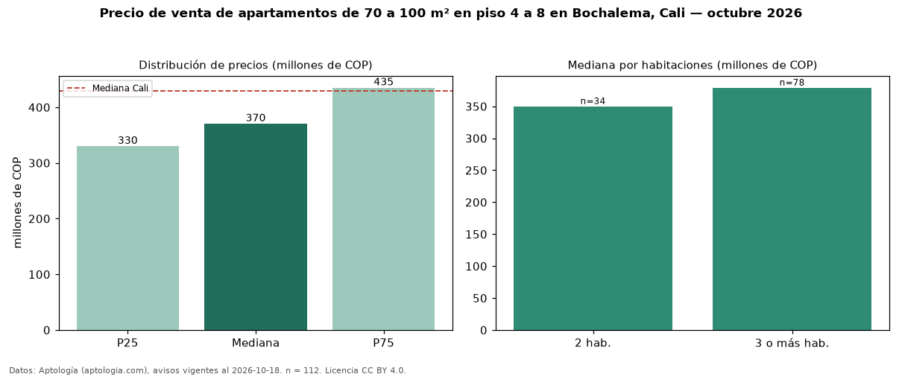

Precio de venta de apartamentos de 70 a 100 m² en piso 4 a 8 en Bochalema, Cali — octubre 2026
Con 112 avisos vigentes, el precio mediano de apartamentos de 70 a 100 m² en piso 4 a 8 en venta en Bochalema, Cali es COP 370 millones. Prácticamente coincide con la mediana de los apartamentos de 70 a 100 m² en venta de Bochalema (COP 370 millones, n = 220); este segmento reúne el 51 % de esos avisos. Por metro cuadrado, la mediana es COP 4,73 millones/m² (n = 112), 0 % por debajo de los apartamentos de 70 a 100 m² en venta de Bochalema (COP 4,75 millones/m²). El área mediana anunciada es 78 m². El segmento con más oferta es el de 3 o más habitaciones (78 avisos, mediana COP 379 millones); pasar de 2 habitaciones a 3 o más habitaciones cambia la mediana +8 %. La administración mediana declarada es COP 365.500 al mes (n = 96). El estrato más frecuente es 4 (61 % de los avisos con estrato). La mediana de todos los apartamentos en venta de Cali es COP 430 millones (−14 % de diferencia). Datos: Aptología (aptologia.com), CC BY 4.0 — https://www.aptologia.com/venta/cali/bochalema. Archivos: PDF, CSV con las cifras y gráfica PNG.

| Avisos únicos | 112 |
|---|---|
| Percentil 25 | COP 330.000.000 |
| Mediana | COP 370.500.000 |
| Percentil 75 | COP 435.000.000 |
| Mediana por m² | COP 4.726.911 |
Fuente: avisos vigentes de portales inmobiliarios recopilados por Aptología, deduplicados (mínimo 30 avisos únicos por celda). Precios pedidos, no cerrados. Fecha: 2026-10-18.